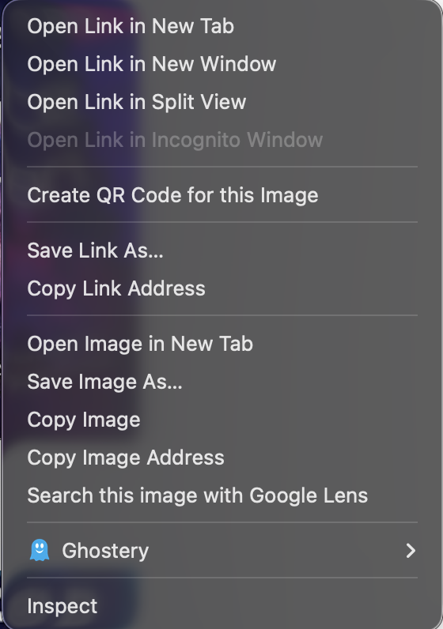
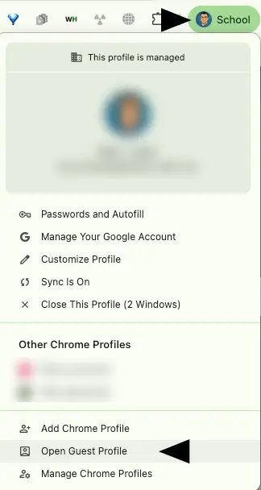
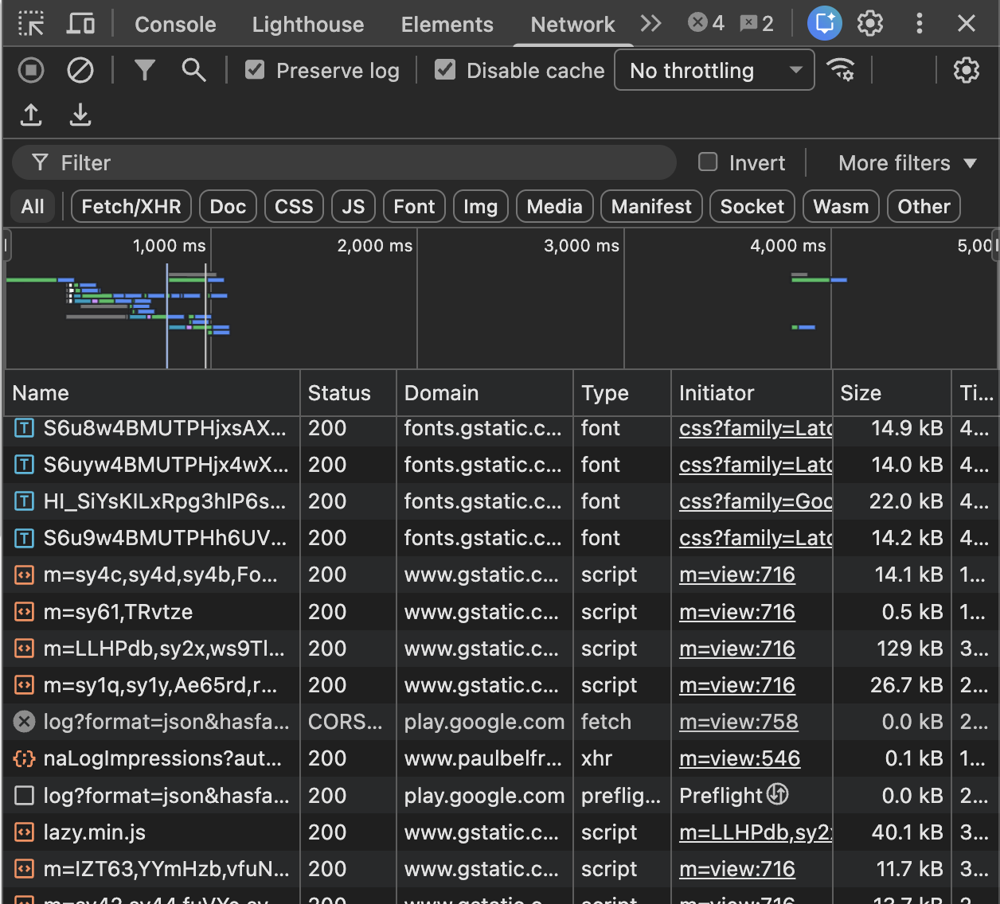

Modul 1
Kap 1.1 - Vad är webbutveckling?
Webbutveckling handlar om att skapa innehåll, struktur, utseende och funktioner som människor kan använda i en webbläsare.
Mål
- Förklara skillnaden mellan klient och server.
- Känna igen begrepp som URL, DNS, IP-adress, HTTP och HTTPS.
- Förstå varför standarder gör webben möjlig att använda på många enheter.
Startfrågor
- Vad händer när du skriver en webbadress i webbläsaren?
- Varför tror du att samma webbsida kan visas på mobil, dator och surfplatta?
Webben i korthet
Webben skapades för att dokument skulle kunna länkas ihop och hämtas över internet. Tim Berners-Lee presenterade iden 1989 på CERN, och 1991 blev webben tillgänglig för fler användare. När W3C bildades 1994 började arbetet med gemensamma standarder för bland annat HTML och CSS.
Standarder är viktiga eftersom webben inte ägs av en enda webbläsare eller ett enda företag. En sida ska kunna fungera i olika webbläsare, operativsystem och skärmstorlekar.
Klient, server och URL
Din webbläsare är en klient. Den begär filer från en server. Servern svarar med HTML, CSS, bilder, JavaScript eller ett felmeddelande. Adressen du skriver kallas URL. Den pekar ut vilken server och vilken resurs du vill hämta.
En domän som example.com behöver översättas till en IP-adress. Det görs med DNS, som
fungerar ungefär som internets adressbok.
HTTP, HTTPS och statuskoder
Webbläsaren och servern kommunicerar med protokollet HTTP. Den säkra varianten heter HTTPS. I HTTPS krypteras kommunikationen med TLS. Uttrycket SSL-certifikat används fortfarande ofta, även om modern kryptering egentligen bygger på TLS.
När servern svarar skickas en statuskod. 200 betyder normalt att begäran lyckades.
404 betyder att resursen inte hittades. Statuskoderna delas in i grupper: 100-tal för
information, 200-tal för lyckade svar, 300-tal för omdirigeringar, 400-tal för klientfel och
500-tal för serverfel.
HTTP-metoder
När en klient pratar med en server kan den använda olika metoder. De vanligaste i den här kursen är
GET och POST. GET hämtar data. POST skickar data, till exempel från ett
formulär. Det finns även metoder som PUT för uppdatering och DELETE för borttagning.
Bit och byte
All digital information lagras som ettor och nollor. En bit är en etta eller nolla. Åtta bitar blir en byte. Filer på webben mäts ofta i kB, MB och GB. När du senare optimerar bilder och video kommer filstorlek att påverka hur snabbt sidan laddas.
Prova själv
- Öppna en valfri webbsida.
- Högerklicka och välj Inspect eller Inspektera.
- Om din skola har stängt av inspektorn i Chrome kan du öppna en gästprofil i Chrome och prova där.
- Öppna fliken Network och ladda om sidan.
- Leta efter statuskoder som
200eller404.



Sammanfattning
- Webbläsaren är klienten och hämtar resurser från servrar.
- DNS översätter domännamn till IP-adresser.
- HTTPS är den krypterade versionen av HTTP.
- Statuskoder berättar hur servern svarade.
- Filstorlek påverkar hur snabbt webbsidor laddas.
Övningar
Så arbetar du: Besvara först kunskapsfrågorna utan att titta i kapitlet. Skriv med egna ord på papper eller i ett dokument och markera det du är osäker på. Öppna sedan svarsstödet, jämför med kapitlet och rätta. Svarsstödets nummer motsvarar frågans eller arbetsstegets nummer.
Övning 1: Återkalla webbens grundbegrepp
- Vad gör klienten respektive servern när du öppnar en webbsida? Vilken av dem är webbläsaren?
- Förklara skillnaden mellan URL, domännamn, DNS och IP-adress.
- Vad skiljer HTTP från HTTPS? Vad betyder statuskoderna 200 och 404?
- Vad används GET och POST till enligt kapitlet? Hur många bitar är en byte?
Svarsstöd – öppna efter ditt eget försök
- Webbläsaren är klienten och begär resurser. Servern svarar med exempelvis HTML, CSS, bilder eller ett felmeddelande.
- URL pekar ut server och resurs. Domännamnet är ett namn, DNS översätter det till en IP-adress och IP-adressen används för att hitta rätt dator i nätverket.
- HTTPS skyddar kommunikationen med TLS. HTTP är protokollet för kommunikationen. 200 betyder normalt att begäran lyckades; 404 att resursen inte hittades.
- GET hämtar data och POST skickar data, exempelvis från ett formulär. Åtta bitar är en byte.
Övning 2: Förklara förloppet och rätta missuppfattningar
- Beskriv i ordning vad som händer när du skriver en webbadress: använd begreppen klient, URL, DNS, IP-adress, server och svar.
- Rätta påståendet ”404 betyder alltid att hela internet har slutat fungera”. Förklara vad koden faktiskt berättar.
- Varför behövs gemensamma standarder om samma sida ska fungera på olika enheter och i olika webbläsare?
- En sida innehåller mycket stora bildfiler. Förklara hur det kan påverka laddningen och koppla till filstorlek i byte.
Svarsstöd – öppna efter ditt eget försök
- Klienten läser adressen. DNS kan översätta domännamnet till en IP-adress. Klienten begär resursen från servern och servern skickar ett svar. Det är en förenklad beskrivning utifrån kapitlet.
- 404 gäller att den begärda resursen inte hittades. Exempelvis kan adressen eller filnamnet vara fel; det betyder inte att hela internet ligger nere.
- Standarder ger gemensamma sätt att tolka bland annat HTML och CSS. Webben ska inte vara beroende av ett enda företag, operativsystem eller en enda webbläsare.
- Större filer betyder mer data att överföra. Det kan ge längre laddningstid, särskilt med långsam uppkoppling. Filstorlekar anges exempelvis i kB och MB.
Återblick vid nästa lektion: Besvara två frågor du var osäker på igen utan att läsa dina gamla svar. Förklara ett viktigt begrepp ur minnet. Kontrollera och rätta efteråt.